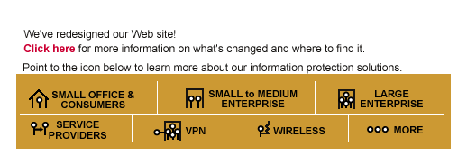
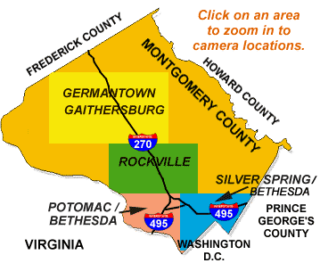

- users -
You should periodically "audit" your network, or install tools that will automatically monitor some aspects of system security and notify you of anything that is discovered. Even then, there is still the potential for successful attacks (through modems or any network or terminal connections). ) Account Security Inform users of "good" password selection criteria, and use either a pro-active password checker or a password cracking program to verify that passwords are secure (e. conf file and run the remaining services with as few privileges as possible (e. , run fingerd as user "nobody", or some other regular user rather than "root") If supported, enable logging of all (i.
. System Security 2001 includes robust security features, you can also implement system policies with the policy editor utility that is included that can restrict access to certain parts or features of the Windows Operating System. System Security 2001 provides you with features that can prevent unwanted or unauthorized users from gaining access to your system. This program accepts two kind of passwords, an administrator password and a user password. The administrator can set access restrictions to the program.
|  |
News in brief This section contains some of the more important recent events in relation to Multiuser. Take a look at the multiuser project page on sourceforge for more info about getting into the CVS repository. Extra libraries for gcc users (needed to compile the source). 13 Feb 2000 European Download Centre now available for export restricted parts of the system that cannot be hosted on sourceforge. Currently, this is the DES Crypt plugin for encryption, available only in binary form (for the time-being).
|  |
Computer Security Unix Computer Security This document shows system administrators how to secure their systems better. In addition, the author takes no responsibility if a person misuses this information. However, often it is fairly easy for someone to get access to systems they are not supposed to have access by simply walking up to a valid users desk. This can be the cleaning staff or a disgruntled (ex)employee making a visit. This is the easiest type of security to implement and should definitely be included in any security plan.
A good users site: http://www.nailabs.com
.